众说操作手册
Windows 桌面版 · 图文入门 · 更新于 2026-10-30
第一次用众说，可以跟着本手册做一次：打开项目 → 添加 AI → 发消息 → 看回复。本手册用“读书会筹备”举例，你可以换成自己的工作、资料或代码项目。
怎么看图： 截图中的蓝色 ①②③ 标出了点击位置，下面的步骤与编号对应。打开 设置 → 操作手册，随时可以回来查。
1. 第一次打开：从一个项目开始
打开众说后，先选择你要工作的文件夹。这个文件夹在众说里叫作 项目。
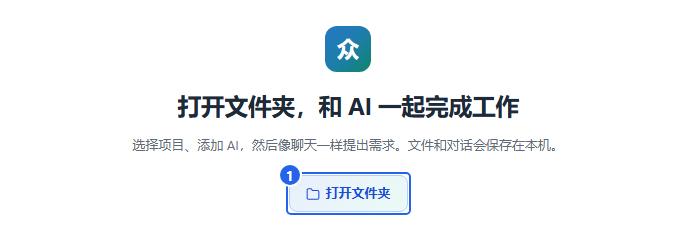
- 点图中 ① 打开文件夹。
- 在弹出的窗口中，选择自己的工作文件夹。例如，先新建一个“读书会筹备”文件夹，把活动资料放进去，再选择它。
- 选择后，左侧会出现项目名和房间。接着按 第 3 章添加 AI，然后 发出第一条消息。
完成后会看到： 项目出现在左侧，点击房间就能进入聊天页面。
以后再打开众说，在左侧点原来的项目和房间，就能继续之前的聊天。
先认识三个词
| 界面上的名称 | 可以这样理解 | 例子 |
|---|---|---|
| 项目 | 一份工作及其文件夹 | 读书会筹备 |
| 房间 / 对话池 | 这份工作里的一个讨论区域 | 活动筹备、资料整理 |
| 对话串 | 围绕一件具体事情的来回讨论 | “整理活动安排”这件事的要求、回复和追问 |
最小化和退出
- 点窗口右上角的 —：收起窗口，AI继续工作。
- 点右上角的 ×：出现确认框；点 退出 关闭众说，点 取消 留在应用中。
2. 认识界面，切换项目和房间
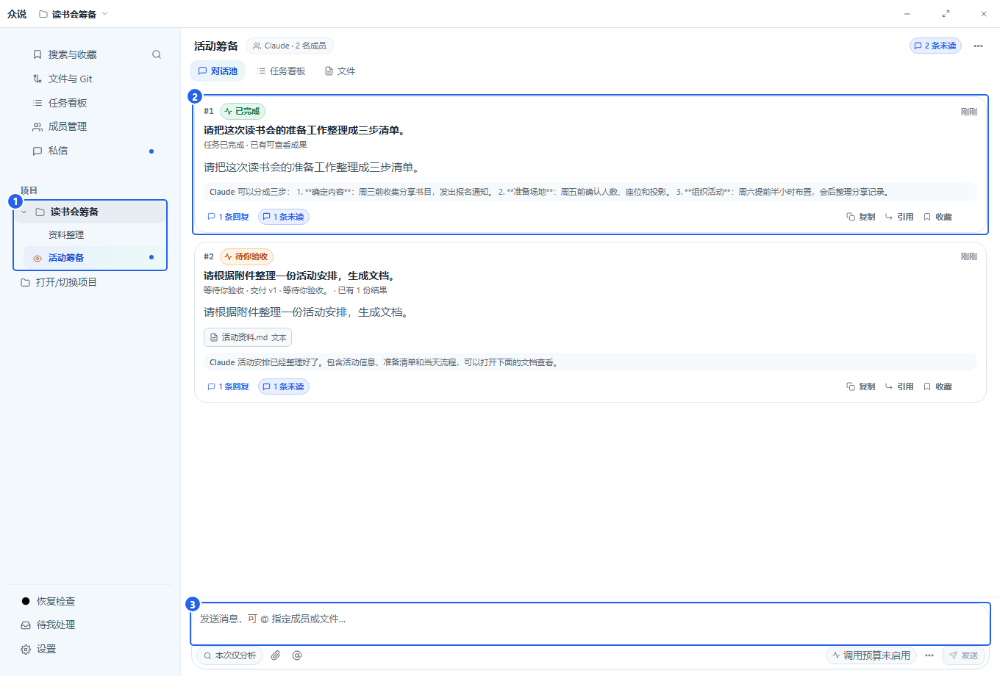
- ① 左侧项目和房间：点房间名称切换讨论区域。不同项目分别保存各自的聊天和文件。
- ② 中间卡片：每张卡片对应一件事。点卡片或下面的回复数，打开它的完整对话。
- ③ 底部输入框：在这里交代一件新的事情。
切换项目： 点左侧另一个项目下的房间。要打开新项目，点左侧 打开/切换项目，再选择文件夹。
切换后，其他已展开项目的房间仍保留。房间列表读取失败时会显示 重试，并保留上次读到的房间；不会把读取失败显示为“暂无房间”。同一项目已经打开的房间可以直接切换，原草稿分别保存。
新建一个房间
在左侧把鼠标移到项目名称上，点右侧的 ＋，打开新建窗口。
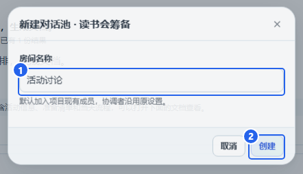
- 在 ① 房间名称 中填写名字，例如“活动讨论”。
- 点 ② 创建。
完成后会看到： 新房间出现在这个项目下，并自动打开。项目已有的AI会加入新房间，可以直接开始聊。
3. 添加 AI：先让一位助手能回复
点左侧 成员管理，再点页面右上方的 添加 AI。
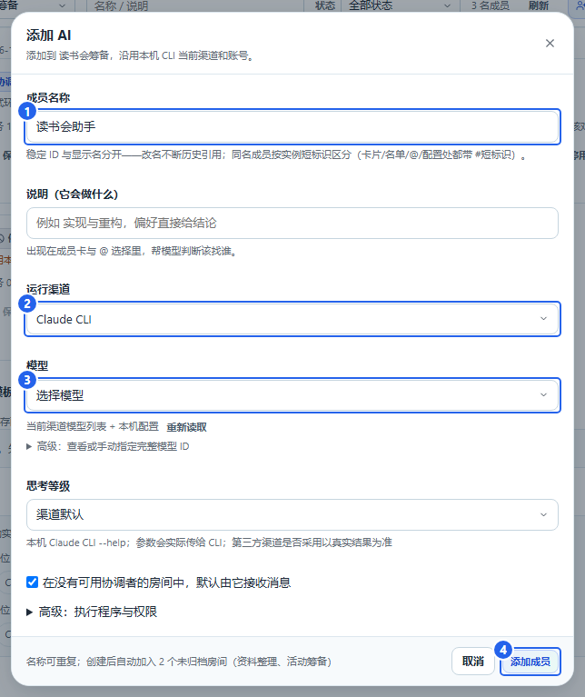
- ① 成员名称：给助手起一个你认得的名字，例如“读书会助手”。
- ② 运行渠道：选这台电脑上已经安装并登录的 Claude 或 Codex。
- ③ 模型：点下拉框，从列表里选一个模型。第一次使用时，其他项目可以保持默认。
- 点 ④ 添加成员，回到房间聊天。
完成后会看到： 成员列表里出现新助手，房间也能使用它。发一句“你好，请介绍一下你能帮我做什么”，就可以开始对话。
渠道、模型和名称有什么区别
| 项目 | 用来做什么 |
|---|---|
| 成员名称 | 你在聊天里看到的名字，也用来指定谁来做事。 |
| 运行渠道 | 众说连接AI所用的程序，例如 Claude 或 Codex。账号登录在对应程序中完成。 |
| 模型 | 这个渠道提供的具体AI，添加时从下拉框选择。 |
模型列表为空时： 先在对应的 Claude 或 Codex 程序中完成安装和登录，再回到这里点 重新读取，选择模型。
修改已有AI
进入 成员管理，在对应成员卡片上点 AI设置…。修改渠道或模型后，点 保存 AI 设置。
只需要阅读和解释资料时，可以展开 高级：执行程序与权限，选择只读模式；需要修改文件时，选择对应的编辑权限。
4. 发消息、看回复，再接着问
发出第一条消息
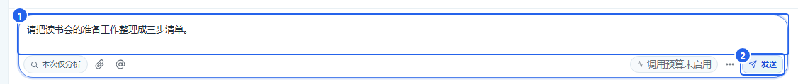
- 在 ① 输入框 写清楚要做什么。例如：“请把读书会的准备工作整理成三步清单。”
- 点 ② 发送。
- 中间会出现一张新卡片，AI的回复会放在这件事的对话里。
还可以这样说：
帮我把这段通知改得更简短，语气亲切一点。
阅读附件，列出时间、地点和需要准备的物品。
打开完整回复，在原处追问
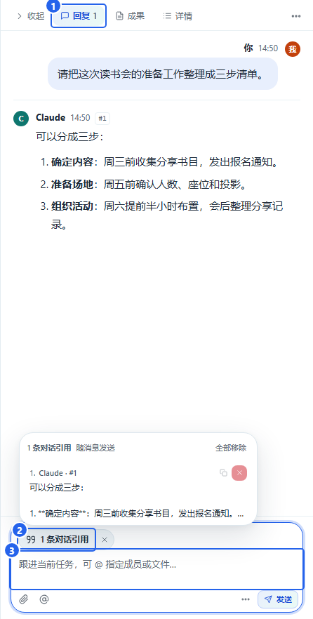
- 在房间点卡片或回复数，打开右侧对话。在 ① 回复 页签阅读AI的完整答复。
- 想针对某条回复提问时，点消息下方的 引用；输入区出现 ② 对话引用。把鼠标移到这里，浮窗会显示引用的来源和摘要。点气泡末尾常显的 ×，可直接删除本次草稿的全部对话引用；浮窗里也可以单独移除其中一条。
- 在 ③ 右侧输入框 补充要求，例如：“把第二步再拆细一点。” 引用原文会随消息一起发送，输入框只需要写新要求。
- 点右侧的 发送，新的回复会接在同一串里。
记住这一区别： 房间底部输入框用来开始新事情；右侧对话串的输入框用来继续当前这件事。
向上翻看历史时，新回复不会把你拉回底部；点浅色的 有新消息 按钮可回到最新回复。
同一个AI在不同对话串里使用独立会话，可以同时处理工作；同一串里连续发送的要求依次处理。默认完整权限下，同一项目的不同串也可以同时修改文件；重叠执行期间的改动会保留快照，需要核对后处理，不能直接自动撤销。受限文件编辑仍按目录排队；结果尚未确认的执行会继续保留保护。停止一件事只影响对应任务。
打开当前对话串的 回复 时，未读标识立即更新；切到其他串、查看详情或窗口在后台时，不会把新回复自动标成已读。
最新一条AI文字回复保持完整展开，方便直接看到待你确认的问题；较早的长回复仍可点 展开全文 阅读。房间名称前的受阻空心标记和执行三角使用项目蓝色，名称前没有标记表示当前没有未结束任务。
让AI记住共同约定
可以在对话里说：“记住：我们这个读书会通常安排在周六下午。” AI会把适合复用的结论作为笔记交给程序保存，同一房间中该AI的后续工作可以参考。程序合并新增笔记，不让多个会话互相覆盖；出现不同说法时保留来源，AI应先核实再使用。 笔记暂时保存失败时，其他工作继续进行，程序会稍后重试；已经成功的工作不会因此重新执行。
笔记不会自动包含整段聊天。其他房间、其他AI和私信分别保存，不把私信内容带进房间。
指定谁来做，或让多人配合
点输入区的 @ 选择成员，再写要求。例如：
@Claude 先整理活动方案，然后请 Codex 核对时间安排有没有冲突。
请你们分别给一个建议，最后把相同点和分歧整理给我。
普通提问直接发送即可。需要谁先做、谁再检查，把顺序写在要求里。
多人互评或分歧讨论中，某位成员未能启动时，会保留其他成员已经完成的回复并说明缺口。处理原因后，在原串继续；不会让一位成员反复代替缺席成员完成讨论。
AI需要你确认时
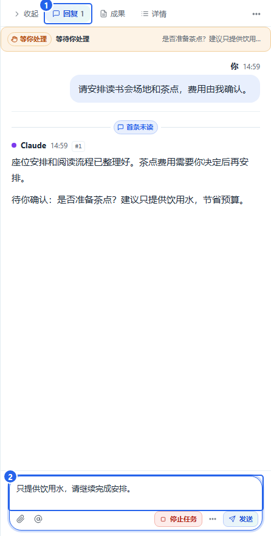
- 在 ① 回复 中阅读具体问题和建议。已经完成的内容会保留，不依赖你答复的独立步骤可以继续。
- 在 ② 原串输入框 写明选择，例如：“只提供饮用水，请继续完成安排。” 然后发送。
- 只有一个步骤在等你答复时，会接着这个步骤做；若多位AI同时提问，用 @ 指定本次答复的成员。
- 同一位AI有多个问题时，按提问先后逐条答复：发送第一条答复后，再回答下一条。已经完成的文件会随原步骤继续交付，无需让AI重新做一遍。
复核发现可修正的问题时，AI会继续修改并重新核对，不再因“已经返工过一次”结束。若调用次数预算不足，或反复修改仍无进展，会明确说明情况并请你确认下一步。需要调整预算时，打开 设置 → AI 设置；旧运行的预算记录会保留，调整后在原对话提出继续要求。
5. 私信：和一位AI单独聊
点左侧 私信，进入一对一聊天。
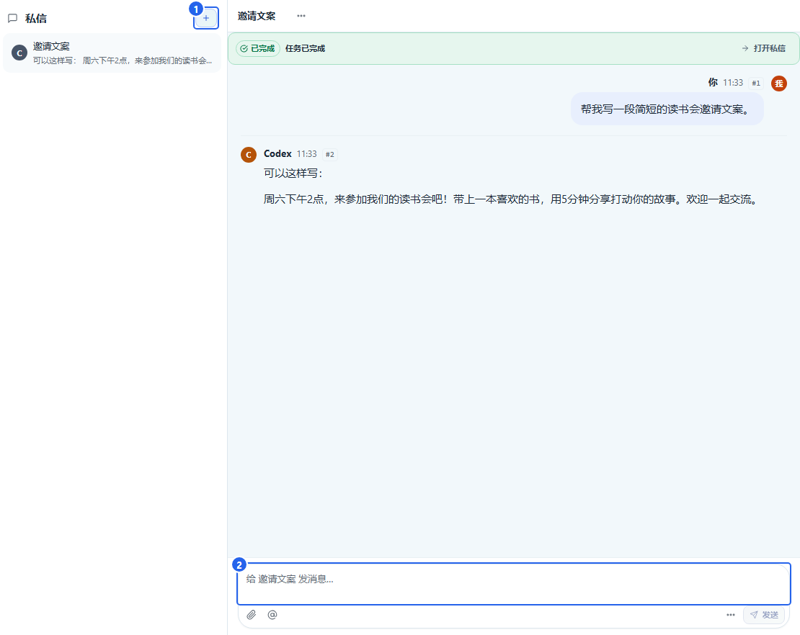
- 点 ① ＋，选择一位成员，再点 创建。
- 在 ② 底部输入框 写问题，点 发送。
- 以后继续同一话题，点私信列表中的这条会话。
什么时候用私信： 想单独请一位AI改文案、解释问题或讨论想法时。
每次新建私信都是独立话题。想让AI接着之前的内容做，就回到之前那条私信中继续说。
6. 看进展、停止任务和继续任务
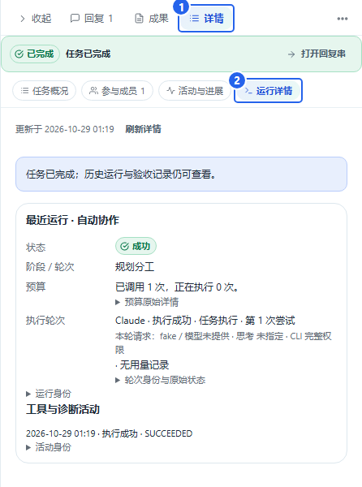
- 打开这件事的对话串，点 ① 详情。
- 点 活动与进展 看最近做了什么；点 ② 运行详情 看当前执行情况。
先看状态，再决定下一步：
| 状态 | 下一步 |
|---|---|
| 正在执行、排队中、等同伴 | 等待回复；想看进度时打开活动与进展。 |
| 等你处理 | 读任务提出的问题，在原串补充信息。 |
| 等待你验收 | 打开成果，检查后确认或提出修改意见。 |
| 已完成 | 阅读回复和成果；还想调整就继续追问。 |
| 未能开始、未完成 | 查看原因，处理后点“按原请求继续”或“继续任务”；不再需要这件事时点“结束任务”。 |
| 已停止 | 已有内容可以继续查看，需要时再继续任务。 |
已完成的对话直接显示回复，完成状态可在房间卡片和详情中查看；需要你验收时仍会显示提示。
如果原因提示执行配置变化，先查看列出的变化来源。切换主题和更新项目展示状态不再影响新请求；真正修改渠道、权限、工具或模型后，用 按原请求继续 或在原串发出新要求，程序会重新读取当前配置，旧失败记录保留。
AI 仍在执行时，等待超过 20 分钟也会继续处理。想主动限制一次执行的时长，可以在项目设置中设置运行时限；默认不限制。
失败提示会说明发生了什么，例如“项目目录无法读取”或“所有 AI 都未返回有效结果”。点运行详情查看具体原因，再按提示处理并继续原任务。
AI连接程序意外退出，或返回了无法确认归属的任务信息时，当前执行会停止等待并标为结果待核实。查看已有回复和文件，再到恢复检查中核对；程序不会自动重跑，也不会直接解除尚未确认安全的文件保护。
想让AI停下来
执行过程中，在这件事的输入区点 停止任务，等待状态变为 已停止。
如果执行已经失败、尚未开始，或在等你答复而你不想继续，点状态栏的 ③ 结束任务。任务会结束，未完成标识随之消除；已有消息、文件与失败记录保留。存在仍在执行或结果待核实的工作时，先停止或完成核实，再结束任务。
想继续做
打开原任务，点 按原请求继续 或 继续任务；部分完成或中断的任务也能继续。提示 补交已有结果 时，按该入口补交。旧执行记录会保留。如果要调整要求，也可以在原对话串里直接补充说明。
7. 找回旧内容：搜索、收藏和任务看板
按关键词找
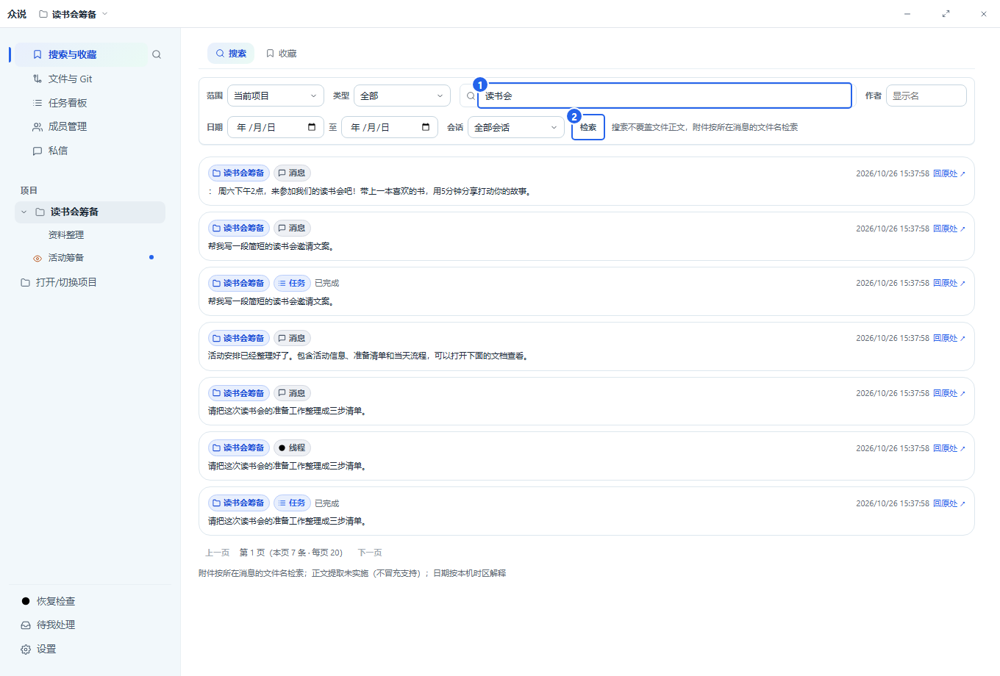
- 点左侧 搜索与收藏。
- 在 ① 搜索框 输入记得的词，例如“读书会”。
- 点 ② 检索，或按回车。
- 点结果，回到那条消息、任务或文件。
结果太多时，用上方的项目、作者、日期或会话选项缩小范围。常用消息可以在消息下方点 收藏，以后到收藏页找。
一起看所有任务
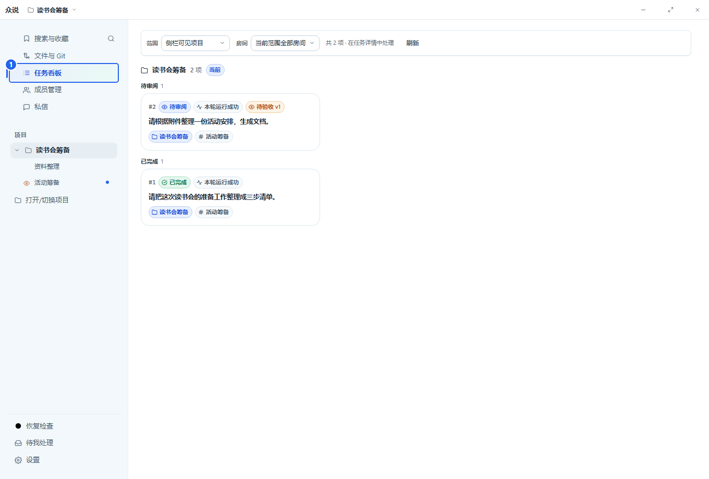
点左侧 任务看板，按状态看任务，点卡片打开。左侧 待我处理 集中显示需要你回答或验收的事情。
快捷找入口： 按 Ctrl+K，输入成员、任务或页面名称，用方向键选中后按回车。
8. 查看成果、保存文件和要求修改
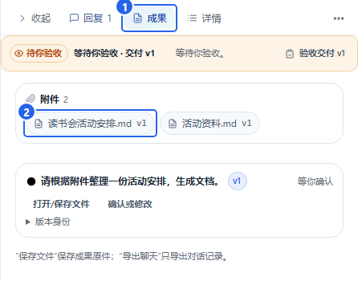
- 在原对话串里点 ① 成果。
- 点 ② 文档名称，打开文件预览。
- 阅读内容；要保存到电脑时，点预览右上角的 下载原文件 图标，选择保存位置并点 保存。
完成后会得到： 一份保存到你所选位置的文件，可以在众说之外打开和使用。
内容还想改
回到原对话串的输入框，直接说明修改点。例如：
请把活动流程改成表格，再加一列“负责人”，其他内容保留。
出现“等待你验收”时
点 验收交付 或成果中的 确认或修改，先看文件，再选择：
- 满意：点 确认完成。
- 需要调整：点 按这些意见修改，填写具体修改要求并提交。
9. 发附件、预览文件和引用文字
把资料交给AI
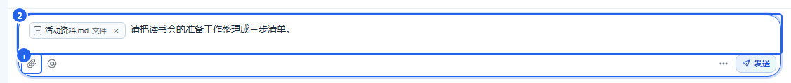
- 点 ① 回形针，选择文件；也可以把文件拖进输入框。
- 等文件名出现在输入区，表示附件准备好了。
- 在 ② 输入框 写要求，例如：“请根据附件整理活动安排。”
- 点 发送。
看文件，保存或引用其中一段
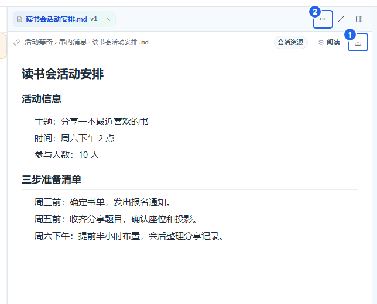
点消息或成果中的文件名，就能打开预览。
- 保存文件： 点图中 ① 下载图标，选择保存位置，再点 保存。
- 问其中一段： 先选中文字，再使用 引用，补上问题后发送。例如：“这段能不能改得更简短？”
- 其他操作： 点 ② 更多文件操作，找到引用和评论等入口。要请AI修改时，把要求发到原对话串。
对话里的文字也可以引用：选中一段后点右键，选择 复制所选文字 或 引用到当前任务。把鼠标移到输入区的 对话引用 上，可在浮窗查看来源和摘要；点气泡末尾的 × 可直接清除本次对话引用。移除引用只影响这次草稿，正文、附件与原消息保留。
10. 浏览项目文件
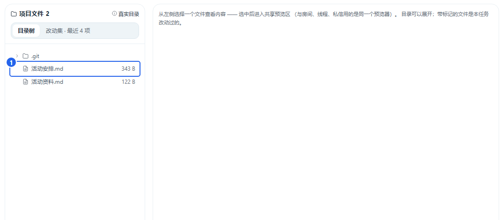
- 点左侧 文件与Git。
- 在 ① 文件列表 找文件；点文件名查看内容。
- 要请AI处理某个文件，回房间说明文件名和要求，例如：“阅读活动资料.md，整理一份准备清单。”
Git是做什么的： 如果你的工作文件夹使用Git管理版本，这里还可以查看代码改动、提交记录和分支。日常整理资料、聊天和写文案，可以先使用文件浏览部分。
项目改动记录沿用Git的忽略规则，安装包、依赖和运行数据等被忽略的内容不混入源码改动；Git中已经跟踪的文件仍会记录。AI交付的文档和附件可以从原回复打开、保存。
11. 调整外观、通知和调用预算
点左侧 设置，选择要调整的项目。
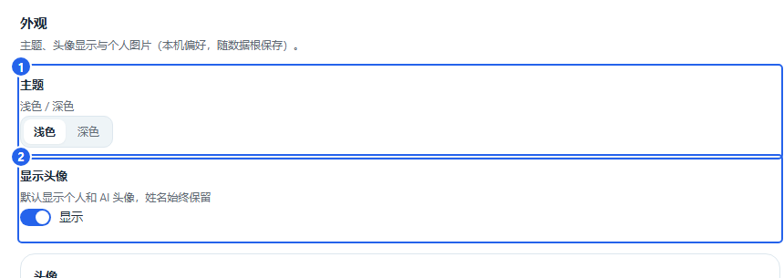
- 点 外观，在 ① 主题 选择浅色或深色。
- 头像默认显示，可在 ② 显示头像 开关调整。
在下方找到自己或 AI 成员，点 选择图片，选择 PNG、JPEG 或 WebP 头像。图片按原图保存，不限制文件大小；需要恢复时点 恢复默认。
通知： 到 设置 → 通知 查看任务提醒和静音设置。收到任务完成的通知后，点通知即可打开对应内容。
只想让某条对话安静一些，可以在那条对话的通知入口静音；想找使用方法，点设置中的 操作手册。
限制一次请求的 AI 调用次数
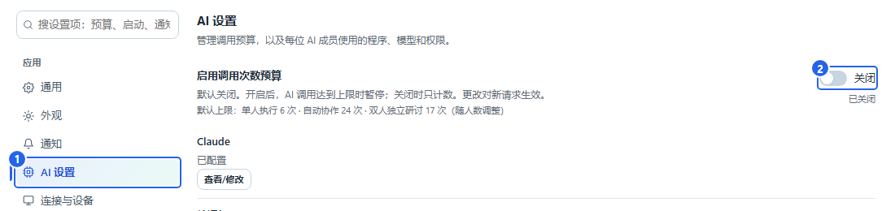
- 进入 设置 → ① AI 设置。也可以在设置搜索框输入“调用预算”。
- 需要限制次数时，打开 ② 启用调用次数预算。返回房间、回复串或私信，输入框旁会显示本次的次数上限。
- 不需要限制时，关闭这个开关。输入框会隐藏预算提示，可以直接发消息。
开关默认关闭。设置对新发出的请求生效，已经开始的任务沿用开始时的设置。
12. 备份、恢复和收起旧项目
备份聊天与资料
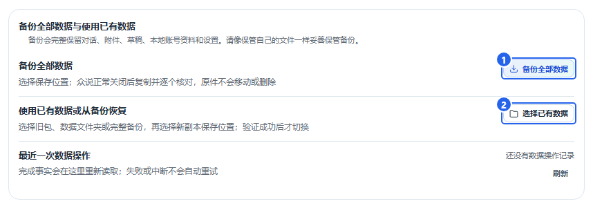
- 进入 设置 → 数据与存储。
- 点 ① 备份全部数据，选择保存备份的位置。
- 按提示关闭众说，等待复制完成。
使用备份或已有数据
- 在同一页面点 ② 使用已有数据或从备份恢复。
- 选择已有数据或完整备份，再选择新副本的保存位置。
- 复制完成后，重新打开众说，查看项目和历史。
收起不常用的项目或房间
在项目或房间的菜单里选择 归档。需要重新使用时，到 设置 → 数据与存储 → 归档管理 恢复。 有尚未开始的排队任务或未结束的工作时，先等待完成或停止，再归档。归档后的房间不会开始旧的排队工作。
其他设备连接的入口在 设置 → 连接与设备；按页面显示的地址和配对步骤连接。
13. 点了发送后，该看哪里
- 自己的消息已经出现在对话里： 说明已经收到，接着看这件事的状态。
- 提示发送结果待确认，并出现“查询刚才的发送”： 点这个按钮。找到后会跳到原消息，继续在那里聊。正常发送不会显示查询入口。
- 出现明确错误： 根据提示处理，例如完成账号登录或重新选择可用模型，再回原任务继续。
遇到临时网络或模型服务故障时，众说会自动重试，最多重试 5 次。等待期间可继续查看活动；重启众说后会接着原来的次数处理。五次仍未成功时，按显示的原因处理，再在原对话继续。
普通历史消息可以用左侧 搜索与收藏 查找。
14. 常见问题：从这里继续操作
想随时打开这份手册
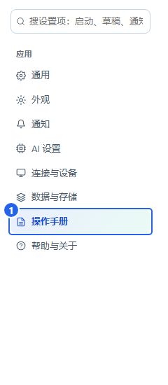
点 设置 → 操作手册，按左侧章节目录查找。也可以在设置搜索框输入“手册”或“教程”。
AI还没回复
打开原对话串，点 详情 → 活动与进展，看它正在处理什么。需要补充信息时，在原串回答；需要停止时点 停止任务。
提示模型或渠道不能用
进入 成员管理 → AI设置…，检查所选渠道和模型。账号登录失效时，在对应渠道重新登录，再回原任务点 按原请求继续。
想让AI真正修改文件
在原串写清楚文件名和修改目标，例如：“请修改活动安排.md，把开始时间改成下午3点。” 到成员的 AI设置… → 高级：执行程序与权限，选择允许编辑项目的权限。
关闭后再打开，怎么接着聊
在左侧点原来的项目和房间，再打开原卡片。私信则从左侧 私信 列表进入原会话。
换了一台电脑，怎样带上聊天
先在原电脑按 第 12 章 备份，再在新电脑的 设置 → 数据与存储 中选择恢复。恢复完成后即可看到原项目和历史。
需要反馈一个问题
截下出问题的界面，写清楚“点了哪个按钮、出现了什么、希望得到什么”。版本信息在 设置 → 帮助与关于。